Stručný popis
Tisková sestava pro entitu Objednávka, tato entita je pak vstupním parametrem sestavy.
Uživatelské rozhraní
Sestava je tvořena z ucelených skupin, které jsou dále postupně popsány. Nejdříve je však uveden drátový diagram celé tiskové sestavy.
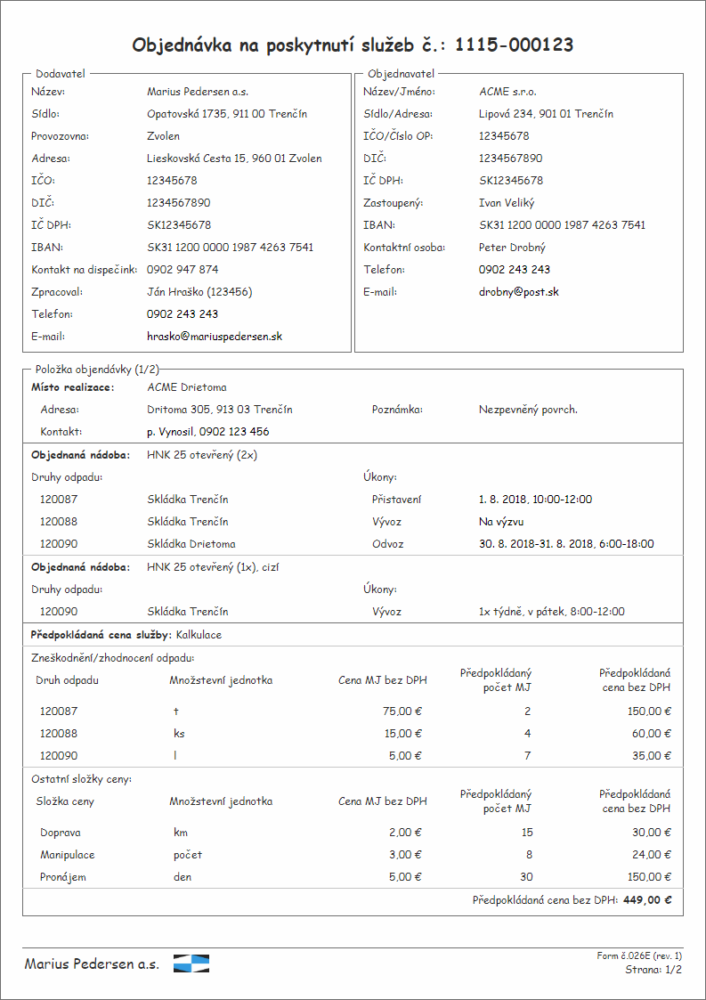
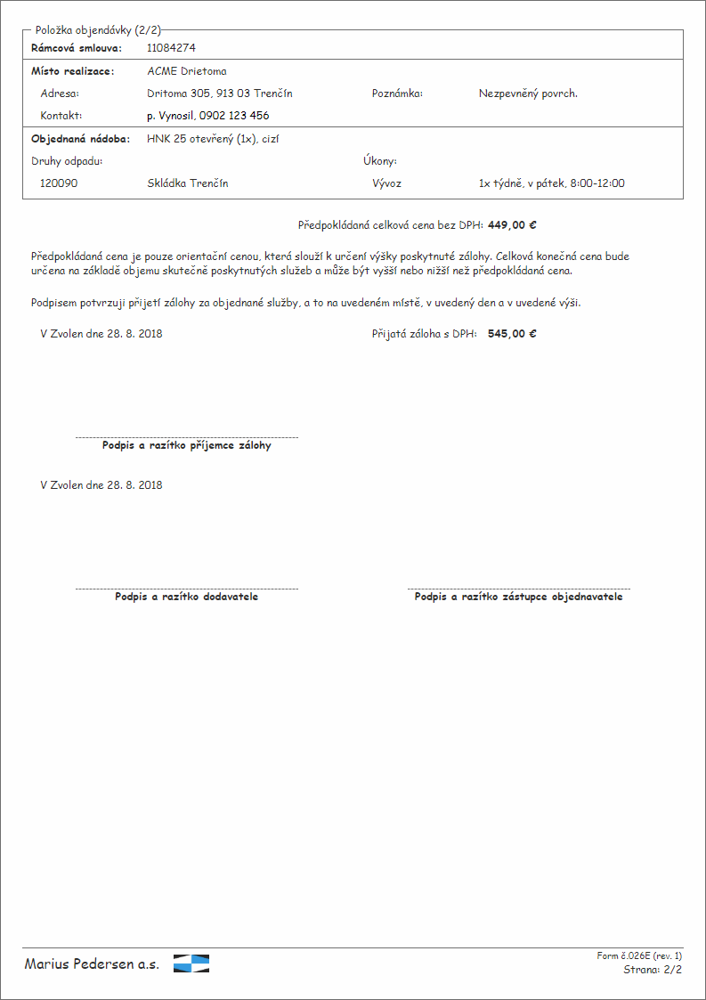
Formulář pro nastavení tiskové sestavy
Před generováním tiskové sestavy je nutné nejdříve nastavit její parametry – formulářem určeným pro tento účel začneme.
Drátový diagram
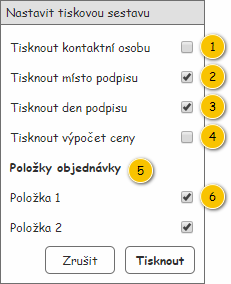
Přehled UI komponent
| Callout | Komponenta | Nadpis | Typ komponenty | Příklad hodnoty | Hodnota | Výchozí hodnota | Formát | Zpřístupněná | Viditelná | Chování | Validace | Poznámka |
|---|---|---|---|---|---|---|---|---|---|---|---|---|
| 1 | Tisk kontaktní osoby | Tisknout kontaktní osobu | ChackBox | – | – | FALSE | – | Vždy | Vždy | – | – | Viz Tisk zpracovatele objednávky. |
| 2 | Tisk místa podpisu | Tisknout místo podpisu | ChackBox | – | – | TRUE | – | Vždy | Vždy | – | – | Tisk místa podpisu. |
| 3 | Tisk dne podpisu | Tisknout den podpisu | ChackBox | – | – | TRUE | – | Vždy | Vždy | – | – | Tisk data podpisu. |
| 4 | Tisk výpočtu ceny | Tisknout výpočet ceny | ChackBox | – | – | FALSE | – | Vždy | Vždy | – | – | |
| 5 | Nadpis položek objednávky | – | Label | – | Položky objednávky | – | – | Vždy | Pokud je v Objednávka obsažena více než jedna Položka objednávky (atribut Položky objednávky entity Objednávka). | – | – | – |
| 6 | Tisk konkrétní položky objednávky | Položka | CheckBox | – | Entita Položka objednávky – atribut Položky objednávky entity Objednávka.
| TRUE | – | Vždy | Pokud je v Objednávka obsažena více než jedna Položka objednávky (atribut Položky objednávky entity Objednávka). | Pokud je umožněn výběr Položek objednávky, musí být vždy alespoň jedna Položka objednávky označena. | – |
Rozložení
Drátový diagram
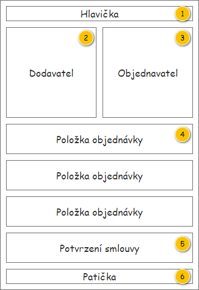
Přehled UI komponent
| Callout | Skupina |
|---|---|
| 1 | Hlavička |
| 2 | Dodavatel |
| 3 | Objednavatel |
| 4 | Položky objednávky |
| 5 | Potvrzení smlouvy |
| 6 | Patička |
Parametry tisku
| Parametr | Hodnota |
|---|---|
| Název souboru | Objednávka <Číslo objednávky> |
| Okraje stránky | 1 cm |
| Písmo | Arial |
| Velikost písma (základní) | 10 |
Hlavička
Drátový diagram
Přehled UI komponent
| Callout | Komponenta | Nadpis | Hodnota | Příklad hodnoty | Formát | Poznámka |
|---|---|---|---|---|---|---|
| 1 | Nadpis formuláře | – | Entita Objednávka. | – | Objednávka na poskytnutí služeb č.: <Číslo objednávky>
| – |
Dodavatel
Drátový diagram
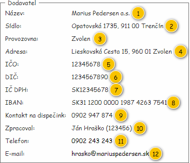
Přehled UI komponent
| Callout | Komponenta | Nadpis | Hodnota | Příklad hodnoty | Formát | Poznámka |
|---|---|---|---|---|---|---|
| – | Skupina Dodavatel | Dodavatel | – | – | – | – |
| 1 | Název | Název: | Entita Provozovna. | Marius Pedersen a.s. | Pokud není Provozovna k dispozici, není zobrazena žádná hodnota. | – |
| 2 | Sídlo | Sídlo: | Entita Provozovna. | Opatovská 1735, 911 00 Trenčín | Pokud není Provozovna k dispozici, není zobrazena žádná hodnota. | – |
| 3 | Provozovna | Provozovna: | Entita Provozovna – atribut Provozovna entity Objednávka. | Zvolen | – | |
| 4 | Adresa provozovny | Adresa: | Entita Adresa – atribut Adresa entity Provozovna – atribut Provozovna entity Objednávka. | Lieskovská cesta 15, 960 01 Zvolen | Pokud není dostupné Číslo orientační:
Pokud není dostupné Číslo popisné:
| – |
| 5 | IČO | IČO: | Entita Informace o provozovně. | 34115901 | Pokud nejsou Informace o provozovně k dispozici, není zobrazena žádná hodnota. | – |
| 6 | DIČ | DIČ: | Entita Informace o provozovně. | 2020386148 | Pokud nejsou Informace o provozovně k dispozici, není zobrazena žádná hodnota. | – |
| 7 | IČ DPH | IČ DPH: | Entita Informace o provozovně. | SK2020386148 | Pokud nejsou Informace o provozovně k dispozici, není zobrazena žádná hodnota. | – |
| 8 | IBAN | IBAN: | Entita Informace o provozovně. | SK70 7500 0000 0000 2581 8343 | Pokud nejsou Informace o provozovně k dispozici, není zobrazena žádná hodnota. | – |
| 9 | Kontakt na dispečink | Kontakt na dispečink: | Entita Provozovna – atribut Provozovna entity Objednávka. | 0902 947 874 | – | |
| 10 | Zpracoval | Zpracoval: | Entita Zaměstnanec – atribut Zaměstnanec entity Uživatel – atribut Vytvořil entity Objednávka. | Ján Hraško (123456) | Pokud není k dispozici Osobní číslo: V tomto případě nemůže nastat situace, že nebude k dispozici odpovídající Zaměstnanec. Ten je uložen v interní databázi modulu RP. Pokud není Zaměstnanec k dispozici, není zobrazena žádná hodnota. | |
| 11 | Telefon | Telefon: | Entita Zaměstnanec – atribut Zaměstnanec entity Uživatel – atribut Vytvořil entity Objednávka. | 0902 243 243 | Pokud není konkrétní Zaměstnanec k dispozici, hodnota není zobrazena vůbec. | Viz Tisk zpracovatele objednávky. |
| 12 | E-mail: | Entita Zaměstnanec – atribut Zaměstnanec entity Uživatel – atribut Vytvořil entity Objednávka. | hrasko@mariuspedersen.sk | Pokud není konkrétní Zaměstnanec k dispozici, hodnota není zobrazena vůbec. | Viz Tisk zpracovatele objednávky. |
Chování
Získání společnosti
Některé z informací, které jsou zobrazeny v této skupině, odpovídají tzv. společnosti (provozovně první úrovně). Tu získáme dle Provozovny, pro kterou byla založena na vstupu získaná Objednávka. Na výstupu algoritmu je pak předána nalezená Provozovna představující společnost.
- Požadovanou Provozovnu představující společnost hledáme následovně:
- Získáme výchozí Provozovnu, která je odkazována z na vstupu získané Objednávky (atribut Provozovna).
- Pro odpovídající Provozovnu hledáme takovou nadřazenou Provozovnu (atribut Nadřazená provozovna), která v rámci atributu Úroveň nabývá hodnoty 1 (dokud není podmínka splněna, opakujeme krok 2).
- Pokud by nastala situace, kdy není možné nalézt Provozovnu splňující uvedenou podmínku, není na výstupu algoritmu předána žádná hodnota.
- Pokud by nastala situace, kdy již výchozí Provozovna (atribut Provozovna entity Objednávky) nabývá v rámci atributu Úroveň hodnoty 1, je na výstupu algoritmu předána přímo tato Provozovna.
- Pokud by nastala situace, kdy výchozí Provozovna (atribut Provozovna entity Objednávky) nabývá v rámci atributu Úroveň hodnoty 0, není na výstupu algoritmu předána žádná hodnota.
Získání informací o společnosti
Některé z informací, které jsou zobrazeny v této skupině, odpovídají společnosti (provozovně 1. úrovně). Tu získáme dle Provozovny konkrétní Objednávky získané na vstupu UC. Na výstupu tohoto algoritmu je pak předán konkrétní záznam entity Informace o provozovně.
Hledáme pak takový záznam entity Informace o provozovně, který splňuje všechny dále uvedené podmínky zároveň:
- Hodnota atributu Provozovna odpovídá nalezené společnosti (viz Získání společnosti).
Tisk zpracovatele objednávky
Uživatel může před tiskem Objednávky určit, zda bude vytištěna osoba, která zpracovala Objednávku. Pokud si uživatel tisk údajů zpracovatele nepřeje, pak není vytištěn ani nadpis uvedených hodnot:
- Zpracoval (komponenta 10),
- Telefon (komponenta 11),
- E-mail (komponenta 12).
Poznámka: Nevztahuje se na kontaktní osobu ve skupině Objednavatel.
Objednavatel
Drátový diagram
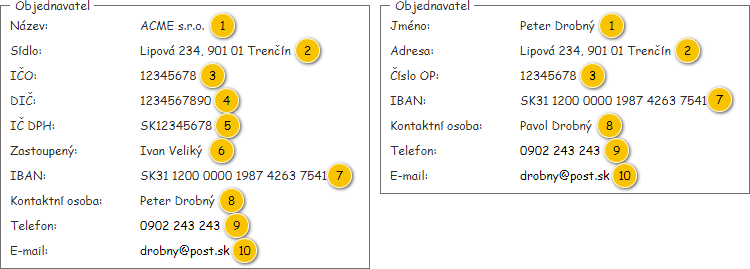
Přehled UI komponent
| Callout | Komponenta (podnikatel) | Nadpis (podnikatel) | Komponenta (nepodnikatel) | Nadpis (nepodnikatel) | Hodnota | Příklad hodnoty | Formát | Poznámka |
|---|---|---|---|---|---|---|---|---|
| – | Skupina Objednavatel | Objednavatel | Skupina Objednavatel | Objednavatel | – | – | – | – |
| 1 | Název | Název: | Jméno | Jméno: | Entita Zákazník – atribut Objednavatel entity Objednávka. | ACME s.r.o. | – | |
| 2 | Sídlo | Sídlo: | Adresa | Adresa: | Entita Adresa – atribut Adresa sídla entity Zákazník – atribut Objednavatel entity Objednávka . | Lipová 234, 901 01 Trenčín | Pokud není dostupné Číslo orientační:
Pokud není dostupné Číslo popisné:
| – |
| 3 | IČO | IČO: | Číslo OP | Číslo OP: | Entita Zákazník – atribut Objednavatel entity Objednávka. | 12345678 | – | |
| 4 | DIČ | DIČ: | – | – | Entita Zákazník – atribut Objednavatel entity Objednávka. | 1234567890 | – | |
| 5 | IČ DPH | IČ DPH: | – | – | Entita Zákazník – atribut Objednavatel entity Objednávka. | SK12345678 | – | |
| 6 | Zastoupený | Zastoupený: | – | – | Entita Osoba zákazníka – atribut Osoby entity Zákazník – atribut Objednavatel entity Objednávka. | Ivan Veliký | – | |
| 7 | IBAN | IBAN: | IBAN | IBAN: | Entita Bankovní spojení | SK31 1200 0000 1987 4263 7541 | Skupiny po 4 znacích oddělené mezerou. | – |
| 8 | Kontaktní osoba | Kontaktní osoba: | Kontaktní osoba | Kontaktní osoba: | Entita Osoba zákazníka – atribut Osoby entity Zákazník – atribut Objednavatel entity Objednávka. | Pavol Drobný | – | |
| 9 | Telefon | Telefon: | Telefon | Telefon: | Entita Objednávka. | 0902 243 243 | – | |
| 10 | E-Mail: | E-Mail: | Entita Objednávka. | drobny@post.sk | – |
Položky objednávky
Rozložení
Nadpis skupiny s Položkou objednávky je tvořen tímto způsobem: Položka objednávky
Pro každou Položku objednávky je pak vložena samostatná skupina.
Drátový diagram

Přehled UI komponent
| Callout | Skupina |
|---|---|
| 1 | Rámcová smlouva |
| 2 | Místo realizace |
| 3 | Objednané nádoby |
| 4 | Výpočet ceny |
Rámcová smlouva
Skupina je zobrazena pouze v případě, že hodnota atributu Podle smlouvy entity Položka objednávky je rovna TRUE. Entita Položka objednávky je pak získána z entity Objednávka, atribut Položky objednávky.
Drátový diagram
Přehled UI komponent
| Callout | Komponenta | Nadpis | Hodnota | Příklad hodnoty | Formát | Poznámka |
|---|---|---|---|---|---|---|
| 1 | Rámcová smlouva | Rámcová smlouva:
| Entita Rámcová smlouva – atribut Rámcová smlouva entity Položka objednávka – atribut Položky objednávky entity Objednávka. | 11084274 | <Číslo smlouvy> | – |
Místo realizace
Drátový diagram
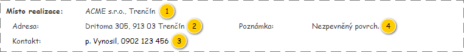
Přehled UI komponent
| Callout | Komponenta | Nadpis | Hodnota | Příklad hodnoty | Formát | Poznámka |
|---|---|---|---|---|---|---|
| 1 | Místo realizace | Místo realizace:
| Entita Místo realizace – atribut Místo realizace entity Položka objednávky – atribut Položky objednávky entity Objednávka. | ACME s.r.o., Trenčín | – | |
| 2 | Adresa | Adresa: | Entita Adresa – atribut Adresa entity Místo realizace – atribut Místo realizace entity Položka objednávky – atribut Položky objednávky entity Objednávka. | Drietoma 305, 913 03 Trenčín | Pokud není dostupné Číslo orientační:
Pokud není dostupné Číslo popisné:
| – |
| 3 | Kontakt | Kontakt: | Entita Místo realizace – atribut Místo realizace entity Položka objednávky – atribut Položky objednávky entity Objednávka. | p. Vynosil, 0902 123 456 | – | |
| 4 | Poznámka | Poznámka: | Entita Místo realizace – atribut Místo realizace entity Položka objednávky – atribut Položky objednávky entity Objednávka. | Nezpevněný povrch. | – |
Objednané nádoby
Drátový diagram
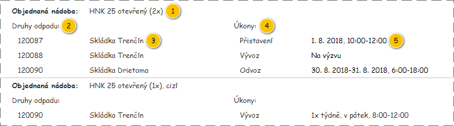
Přehled UI komponent
| Callout | Komponenta | Nadpis | Hodnota | Příklad hodnoty | Formát | Poznámka |
|---|---|---|---|---|---|---|
| 1 | Objednaná nádoba | Objednaná nádoba:
| Entita Objednaná nádoba – atribut Objednané nádoby entity Položka objednávky – atribut Položky objednávky entity Objednávka. | HNK 25 otebřený (1x), cizí | Liší se dle hodnoty atributu Vlastní nádoba:
| – |
| 2 | Nadpis Druhů odpadu | – | Druhy odpadu: | – | – | – |
| 3 | Druh odpadu | – | Entita Vývoz na Likvidační místo – atribut Vývozy na Likvidační místo entity Objednaná nádoba – atribut Objednané nádoby entity Položka objednávky – atribut Položky objednávky entity Objednávka. | 120087 Skládka Trenčín | <Druh odpadu.Katalogové číslo> <Likvidační místo.Název> | Pro všechny Vývozy na Likvidační místo u Objednané nádoby. Oproti komponentě 2 je mírně odsazeno. |
| 4 | Nadpis Objednaných úkonů | – | Úkony: | – | – | – |
| 5 | Objednaný úkon | – | Entita Objednaný úkon – atribut Objednané úkony entity Objednaná nádoba – atribut Objednané nádoby entity Položka objednávky – atribut Položky objednávky entity Objednávka. | Vývoz Na výzvu | Liší se dle atributu Podmínka vykonání:
| Pro všechny Objednané úkony u Objednané nádoby. Oproti komponentě 4 je mírně odsazeno. |
Výpočet ceny
Skupina je zobrazena pouze v případě, že hodnota atributu Podle smlouvy entity Položka objednávky je rovna FALSE. Entita Položka objednávky je pak získána z entity Objednávka, atribut Položky objednávky.
Drátový diagram
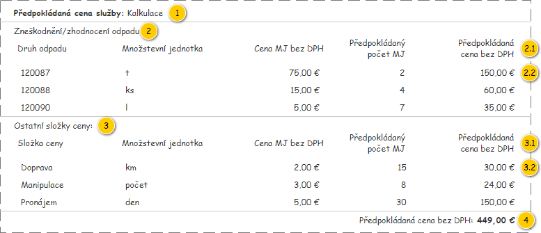
Přehled UI komponent
| Callout | Komponenta | Nadpis | Hodnota | Příklad hodnoty | Formát | Poznámka |
|---|---|---|---|---|---|---|
| 1 | Typ výpočtu ceny | Předpokládaná cena služby:
| Entita Položka objednávky – atribut Položky objednávky entity Objednávka. | Kalkulace | – | |
| 2 | Nadpis skupinu Zneškodnění/zhodnocení odpadu | – | Zneškodnění/zhodnocení odpadu | – | – | – |
| 2.1 | Nadpisy pro řádky s hodnotami | – | Nadpisy jednotlivých sloupců:
| – | – | – |
| 2.2 | Řádky s hodnotami | – | Entita Řádek výpočtu ceny – atribut Výpočet ceny entity Položka objednávky – atribut Položky objednávky entity Objednávka. |
|
| Pouze řádky, kde je hodnota atributu Typ cenové položky rovna Transakce s odpadem. |
| 3 | Nadpis skupinu Ostatní složky ceny | – | Ostatní složky ceny | – | – | – |
| 3.1 | Nadpisy pro řádky s hodnotami | – | Nadpisy jednotlivých sloupců:
| – | – | – |
| 3.2 | Řádky s hodnotami | – | Entita Řádek výpočtu ceny – atribut Výpočet ceny entity Položka objednávky – atribut Položky objednávky entity Objednávka. |
|
| Pouze řádky, kde je hodnota atributu Typ cenové položky různý od Transakce s odpadem. |
| 4 | Celková cena Položky objednávky | Liší se dle atributu Plátce DPH entity Zákazník – atribut Objednavatel entity Objednávka:
| Viz Celková cena – výpočet. | 449,00 € |
| – |
Chování
Tisk výpočtu ceny
Uživatel může před tiskem Objednávky určit, zda bude vytištěna celá skupina Výpočet ceny. Pokud si uživatel tisk výpočtu ceny nepřeje, není skupina vytištěna vůbec.
Nadpis pro sloupec s cenou MJ
Liší se dle atributu Plátce DPH entity Zákazník – atribut Objednavatel entity Objednávka:
- TRUE: Cena MJ bez DPH
- FALSE: Cena MJ s DPH
Nadpis pro sloupec s celkovou cenou řádku výpočtu ceny
Liší se dle atributu Plátce DPH entity Zákazník – atribut Objednavatel entity Objednávka:
- TRUE: Předpokládaná cena bez DPH
- FALSE: Předpokládaná cena s DPH
Tisk položek objednávky
Uživatel může před tiskem Objednávky určit, které z Položek objednávky budou vytištěny. Vytištěny pak pouze ty Položky objednávky, které uživatel zvolil v rámci formuláře pro nastavení tiskové sestavy.
Potvrzení smlouvy
Drátový diagram
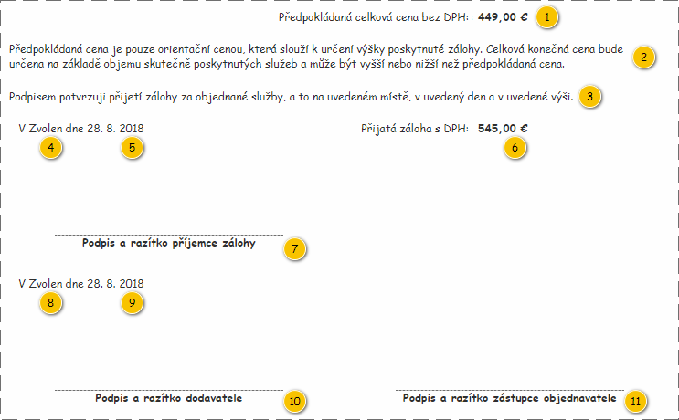
Přehled UI komponent
| Callout | Komponenta | Nadpis | Hodnota | Příklad hodnoty | Formát | Poznámka |
|---|---|---|---|---|---|---|
| 1 | Celková cena objednávky | Liší se dle atributu Plátce DPH entity Zákazník – atribut Objednavatel entity Objednávka:
| Viz Celková cena – výpočet. | 449,00 € |
| – |
| 2 | Potvrzení předpokládané ceně | – | Předpokládaná cena je pouze orientační cenou, která slouží k určení výšky poskytnuté zálohy. Celková konečná cena bude určena na základě objemu skutečně poskytnutých služeb a může být vyšší nebo nižší než předpokládaná cena.
| – | – | Slovenský překlad byl dodán přímo zákazníkem. |
| 3 | Potvrzení o přijetí zálohy | – | Podpisem potvrzuji přijetí zálohy za objednané služby, a to na uvedeném místě, v uvedený den a v uvedené výši. | – | – | Viz Tisk potvrzení o přijetí zálohy. |
| 4 | Místo přijetí zálohy | V | Entita Adresa – atribut Adresa entity Provozovna – atribut Provozovna entity Objednávka. | Zvolen | Viz Tisk potvrzení o přijetí zálohy. Viz Tisk místa podpisu. | |
| 5 | Den přijetí zálohy | dne | Dnešní datum. | 14. 8. 2018 | Datum | Viz Tisk potvrzení o přijetí zálohy. Viz Tisk data podpisu. |
| 6 | Výše přijaté zálohy | Přijatá záloha s DPH: | Entita Objednávka. | 1 449,00 € |
| Viz Tisk potvrzení o přijetí zálohy. |
| 7 | Podpis o přijetí zálohy | Podpis a razítko příjemce zálohy
| Podpis a razítko příjemce zálohy | Viz Tisk potvrzení o přijetí zálohy. | ||
| 8 | Místo podpisu smlouvy | V | Entita Adresa – atribut Adresa entity Provozovna – atribut Provozovna entity Objednávka. | Zvolen | Viz Tisk místa podpisu. | |
| 9 | Den podpisu smlouvy | dne | Dnešní datum. | 14. 8. 2018 | Datum | Viz Tisk data podpisu. |
| 10 | Podpis smlouvy dodavatelem | – | Podpis a razítko dodavatele | – |
| – |
| 11 | Podpis smlouvy objednavatelem | – | Podpis a razítko zástupce objednavatele | – |
| – |
Chování
Tisk potvrzení o přijetí zálohy
V některých případech nebude vytištěna celá část s potvrzením o přijetí zálohy:
- Objednávka neobsahuje ani jednu Položku objednávky, která má hodnotu atributu Podle smlouvy rovnu FALSE.
- Výše hodnoty atributu Přijatá záloha entity Objednávka je rovna nule.
Nebudou pak tištěny ani nadpisy hodnot, ani samotné hodnoty:
- Celková cena objednávky (komponenta 1),
- Potvrzení o předpokládané ceně (komponenta 2).
- Potvrzení o přijetí zálohy (komponenta 3),
- Místo přijetí zálohy (komponenta 4),
- Den přijetí zálohy (komponenta 5),
- Výše přijaté zálohy (komponenta 6),
- Podpis o přijetí zálohy (komponenta 7).
Poznámka: V případě, kdy uživatel zvolí, že nechce vytisknout výpočet ceny, bude vytištěna celá skupina prvků potvrzení o přijetí zálohy.
Tisk místa podpisu
Uživatel může před tiskem Objednávky určit, zda bude vytištěno místo podpisu. Pokud si uživatel tisk místa podpisu nepřeje, je vytištěn pouze nadpis uvedené hodnoty, hodnota samotná už pak ne. Místo podpisu je pak nahrazeno vodícími tečkami v délce 6 cm.
- Místo přijetí zálohy (komponenta 4),
- Místo podpisu smlouvy (komponenta 8).
Tisk data podpisu
Uživatel může před tiskem Objednávky určit, zda bude vytištěn den podpisu. Pokud si uživatel tisk dne podpisu nepřeje, je vytištěn pouze nadpis uvedené hodnoty, hodnota samotná už pak ne. Den podpisu je pak nahrazen vodícími tečkami v délce 3 cm.
- Den přijetí zálohy (komponenta 5),
- Den podpisu smlouvy (komponenta 9).
Patička
Drátový diagram
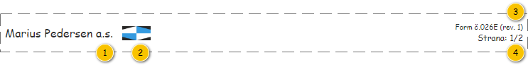
Přehled UI komponent
| Callout | Komponenta | Nadpis | Hodnota | Příklad hodnoty | Formát | Poznámka |
|---|---|---|---|---|---|---|
| 1 | Název společnosti | – | Vychází z grafického manuálu – viz přiložené schéma a zdrojový soubor. | – |
| – |
| 2 | Logo společnosti | – | Vychází z grafického manuálu – viz přiložené schéma a zdrojový soubor. | – | – | – |
| 3 | Název dokumentu | – | Form č. 26 | – |
| – |
| 4 | Stránkování | – | Vychází z konkrétního dokumentu. | Strana: 1/2 | Strana:
| – |
Logo společnosti
Název a logo společnosti musí splňovat požadavky grafického manuálu, pro tyto potřeby je tedy přiloženo schéma a zdrojový soubor.
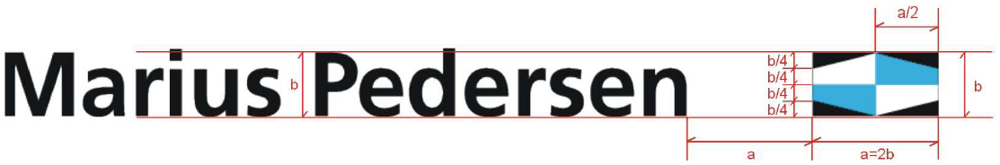
Zdrojový soubor: .
Chování
Zalomení obsahu
Vzhledem k množství obsažených informací může velice snadno dojít k tomu, že bude na výstupu předán vícestránkový dokument. Je tedy potřeba určit místa, na kterých bude umožněno rozdělení dokumentu. Dokument pak může být rozdělen pouze v dále uvedených případech.
Poznámka: Pokud nastane situace, kdy se samostatná (nedělitelná) část dokumentu nevejde na celou stránku, nemusí být dodržena uvedená místa rozdělení.
Drátový diagram
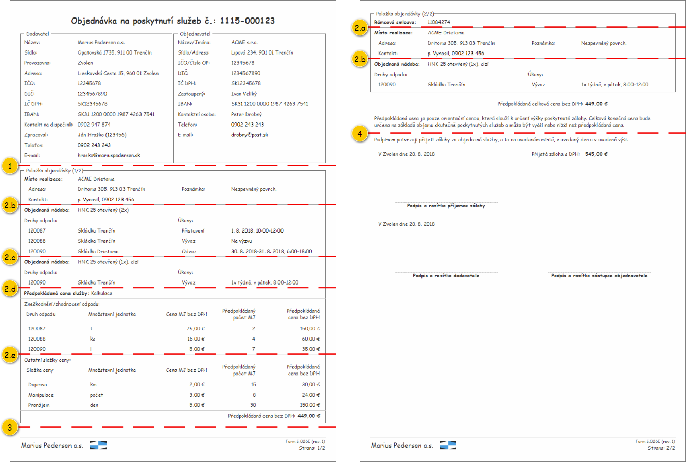
Přehled UI komponent
| Místo rozdělení | Popis | Poznámka |
|---|---|---|
| 1 | Rozdělení před první položkou objednávky. | – |
| 2.a | Rozdělení v rámci položky objednávky mezi rámcovou smlouvou a místem realizace. | Vyskytuje se pouze u položky objednávky typu Rámcová smlouva. |
| 2.b | Rozdělení v rámci položky objednávky mezi místem realizace a první objednanou nádobou. | – |
| 2.c | Rozdělení v rámci položky objednávky mezi jednotlivými objednanými nádobami. | – |
| 2.d | Rozdělení v rámci položky objednávky mezi poslední objednanou nádobou a výpočtem ceny. | Vyskytuje se pouze u položky objednávky typu Jednorázová. |
| 2.e | Rozdělení v rámci položky objednávky mezi tabulkami s výpočty ceny. | Vyskytuje se pouze u položky objednávky typu Jednorázová. |
| 3 | Rozdělení mezi jednotlivými položkami objednávky. | – |
| 4 | Rozdělení mezi informacemi o předpokládané celkové ceně a informacemi o přijaté záloze | Informace o přijaté záloze jsou vždy tištěny spolu s podpisy zúčastněných stran. |
Grafický návrh
Vychází z drátového diagramu. Písmo odpovídá parametrům tisku, případné odchylky jsou uvedeny u konkrétních částí tiskové sestavy.
Revize
31. 8. 2023: Tomáš Nadrchal
| Odkaz | Stručný popis změny/doplnění |
|---|---|
| Získání společnosti | Revize způsobu získání společnosti (naznačeno modře). |
16. 12. 2021: Tomáš Nadrchal
| Odkaz | Stručný popis změny/doplnění |
|---|---|
| Dodavatel | Rozlišení informací o dodavateli dle konkrétní provozovny (naznačeno modře, viz ). |
11. 9. 2019: Tomáš Nadrchal
| Odkaz | Stručný popis změny/doplnění |
|---|---|
| Zalomení obsahu | Doplněn popis míst, ve kterých může dojít k zalomení při přechodu na další stranu. |
12. 7. 2019: Miroslav Slivoně
| Odkaz | Stručný popis změny/doplnění |
|---|---|
| Tisk potvrzení o přijetí zálohy | Odstraněno chování, kdy se nemělo být tištěno potvrzení o přijetí zálohy v případě, že uživatel zvolil možnost netisknout výpočet ceny. |
11. 7. 2019: Miroslav Slivoně
| Odkaz | Stručný popis změny/doplnění |
|---|---|
| isk zpracovatele objednávky | Úprava chování - nebudou vytištěny ani nadpisy. |
| Potvrzení smlouvy - přehled UI komponent | Úprava popisku na "Celková předpokládaná cena ..." |
4. 6. 2019: Tomáš Nadrchal
| Odkaz | Stručný popis změny/doplnění |
|---|---|
Aktualizace dokumentu dle změnových požadavků (naznačeno modře). Poznámka: Některé změny se projeví i v rámci 103UI02: Tisková sestava potvrzení o vrácení zálohy. |
21. 1. 2019: Tomáš Nadrchal
| Odkaz | Stručný popis změny/doplnění |
|---|---|
| Patička | Aktualizován popis zobrazení názvu a loga společnosti. |
16. 10. 2018: Tomáš Nadrchal
| Odkaz | Stručný popis změny/doplnění |
|---|---|
| Výpočet ceny | Doplnění informací o případech, kdy není tištěna kalkulace ceny. |
| Tisk potvrzení o přijetí zálohy | Doplnění komponent, které se skrývají (přidána Celková cena objednávky). |
| Parametry tisku | Doplnění názvu souboru. |
26. 9. 2018: Tomáš Nadrchal
| Odkaz | Stručný popis změny/doplnění |
|---|---|
| Potvrzení smlouvy | Doplnění celkové ceny objednávky. |